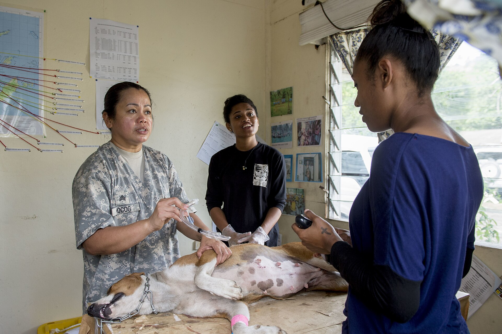
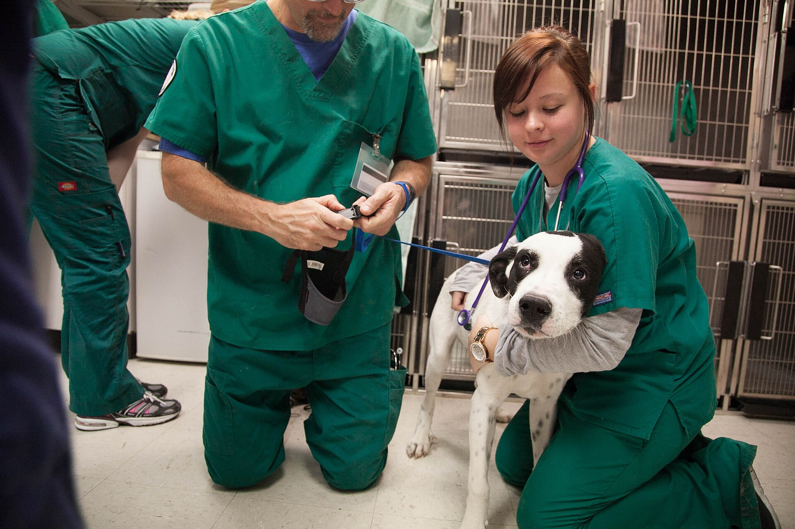

Undersökning
Veterinären känner igenom djuret, lyssnar på hjärta och lungor och går igenom symtombilden med dig. Tar 20 till 30 minuter.
Prislistan gäller 2026 och alla belopp är inklusive moms. En vaccination för hund kostar 650 kr, en kastrering av hona 6 900 kr. Kalkylatorn längre ner på sidan ger dig en preliminär summa för ditt djur innan du bokar.
Prislista
Beloppen nedan är inklusive moms och avser klinikbesök på Klinikvägen 12. De flesta åtgärder blir klara under samma besök, och priset täcker hela kedjan från undersökning till skriftligt svar.
| Åtgärd | Omfattning | Pris |
|---|---|---|
| Vaccination hund | Undersökning, grundvaccination och vaccinationsintyg. Tar 20 minuter. | 650 kr |
| Vaccination katt | Undersökning, grundvaccination och vaccinationsintyg. Tar 20 minuter. | 595 kr |
| Kastrering hane | Narkos, ingrepp och smärtlindring för 3 dagar. Hem samma dag. | 3 900 kr |
| Kastrering hona | Narkos, bukoperation, smärtlindring för 3 dagar och återbesök efter 10 dagar. | 6 900 kr |
| Tandstenborttagning | Narkos, ultraljudsscaler, tandröntgen och polering. Tar 60 minuter. | 4 800 kr |
| Röntgen | Två bilder, bedömning av veterinär och svar samma dag. | 3 200 kr |
| Ultraljud | Buk- eller hjärtundersökning med skriftligt svar på papper. | 2 400 kr |
| Hälsokontroll | Genomgång av allmäntillstånd, tänder, hud och vikt. Tar 30 minuter. | 890 kr |
Den markerade raden är vår vanligaste operation: 6 900 kr för kastrering av hona, inklusive återbesöket. Tillkommer gör medicin att ta med hem (från 180 kr), analyser som skickas till externt labb (från 450 kr) och akutärenden utanför ordinarie öppettid (900 kr i jourtillägg, oavsett åtgärd).
Kostnadskalkylator
Välj åtgärd och skriv in djurets vikt. Summan uppdateras direkt medan du fyller i fälten och bygger på samma siffror som prislistan ovan.
Tre saker flyttar beloppet: djurets vikt, hur lång tid ingreppet tar och vilket material som går åt. Vikten är den enda av dem du kan fylla i själv här på sidan.
Vaccination, röntgen och hälsokontroll har fast pris oavsett vikt eftersom ingen narkos används. Vid kastrering och tandvård räknas 10 till 18 kr per kilo ovanpå baspriset.
Innehåll
Priserna i listan är kompletta paket. Nedan ser du vad som alltid ligger inräknat, oavsett vilken åtgärd du väljer.
Veterinären känner igenom djuret, lyssnar på hjärta och lungor och går igenom symtombilden med dig. Tar 20 till 30 minuter.
Narkosmedlet doseras efter vikt. Andning och hjärtfrekvens kontrolleras varje minut under ingreppet och i 30 minuter efter uppvaknandet.
Alla kirurgiska ingrepp avslutas med smärtlindring som håller i 24 timmar. Vid kastrering och tandvård får du tabletter för 3 dagar med hem.
Anteckningen skickas till din e-post samma kväll. Där står dosering, när nästa besök ska ske och vad som ska följas upp hemma.
Operationssåret kontrolleras och stygnen tas bort efter 10 till 14 dagar. Det besöket kostar ingenting.
Vaccinationsintyg skrivs ut på plats. Recept läggs i den digitala journalen och kan hämtas på valfritt apotek.
Prissättning
Baspriset bygger på tidsåtgång, material och den utrustning som krävs. En vaccination tar 20 minuter i undersökningsrummet. En kastrering av hona tar 90 minuter inklusive uppvaknande och övervakning.
Vikten avgör mängden narkosmedel och därmed en del av kostnaden. För kastrering räknar vi 18 kr per kilo för hona och 12 kr per kilo för hane ovanpå baspriset. En hund på 30 kg kostar alltså 540 kr mer än en på 10 kg.
Analyser som skickas till externt labb faktureras vidare utan påslag. På fakturan står labbets eget artikelnummer, så du kan kontrollera summan mot din försäkring.

Processen
Fyra steg mellan bokningen och betalningen. Inget steg innehåller kostnader som du inte har fått skriftligt i förväg.
När du skickar in bokningsförfrågan får du ett prisintervall per e-post inom en arbetsdag. För kastrering av hona ligger intervallet oftast mellan 6 900 och 7 400 kr.
Veterinären går igenom alternativen på plats och skriver ner ett högsta belopp. Överstiger åtgärden 3 000 kr får du beloppet skriftligt innan behandlingen startar.
Behövs något utöver planen ringer vi och frågar innan vi fortsätter. Du kan tacka nej och avsluta med det som redan är gjort.
Fakturan kommer inom 3 arbetsdagar med en rad per åtgärd och material. Delbetalning väljer du direkt på fakturan, ingen separat ansökan behövs.

Betalning
Vi skickar underlaget till ditt försäkringsbolag samma dag som besöket. Direktreglering fungerar med de flesta svenska djurförsäkringsbolag, och då betalar du bara självrisken på plats.
Saknar djuret försäkring går det att välja delbetalning i 6 månader utan ränta och utan uppläggningsavgift för belopp över 3 000 kr. Villkoret är att varje månadsbelopp betalas i tid.
Priset i listan gäller oavsett tid på dygnet för bokade besök. Akutärende utanför ordinarie öppettid har ett tillägg på 900 kr. Tillägget täcker jourberedskap och påverkar inte undersökningen.
Du får alltid en skriftlig kostnadsuppskattning innan behandlingen startar. Uppskattningen gäller i 14 dagar, därefter räknas priset om enligt gällande lista.
Blir slutsumman lägre än taket betalar du det lägre beloppet. Skillnaden krediteras samma dag som fakturan skapas.
Frågor och svar
De fem frågorna vi får oftast på telefon, med samma svar som du får när du ringer oss.
Nej. Bokning, ombokning och avbokning är avgiftsfria. Avbokar du senare än 2 timmar innan en operation debiteras 800 kr, eftersom tiden då inte kan användas av någon annan.
Katter väger oftast mindre och behöver mindre narkosmedel. Vaccination för katt kostar 595 kr mot 650 kr för hund. Vid kirurgi styrs skillnaden i stället av arbetstid och eftervård.
Smärtlindring för de första dagarna ingår i kastrering och tandvård. Övrig medicin, till exempel antibiotika eller fästingmedel, tillkommer och kostar från 180 kr.
Ja. Skriv det i bokningsformuläret så får du en skriftlig uppskattning per e-post inom en arbetsdag. Beloppet gäller i 14 dagar från utskicket.
Vi fakturerar bara den behandling vi gjort själva, till exempel röntgen eller stabilisering. Djursjukhuset skickar sin egen faktura, och vi hjälper dig att skicka underlaget vidare till försäkringsbolaget.
Skicka in en bokningsförfrågan så ringer vi upp inom en arbetsdag med en skriftlig kostnadsuppskattning för ditt djur.